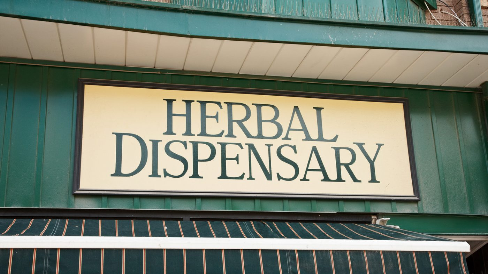

Opening a Dispensary in Colorado: What You Need to Know

If you're considering opening a dispensary in Colorado, there are many things to consider. In this guide, we'll provide you with all the information you need to get started on this exciting and potentially lucrative journey.
Understanding the Legal Requirements
First and foremost, it's important to understand the legal requirements for opening a dispensary in Colorado. To operate a dispensary in the state, you must have a license issued by the Colorado Department of Revenue's Marijuana Enforcement Division. The application process can be lengthy and requires a significant amount of documentation, including proof of financial stability, a detailed business plan, and background checks for all employees.
Securing a Location
Once you have obtained your license, you'll need to secure a location for your dispensary. It's important to choose a location that is compliant with local zoning laws and is not located near schools, public parks, or other areas where children congregate. You'll also need to ensure that your location is easily accessible and has ample parking for your customers.
Building Your Team
One of the keys to success in the cannabis industry is building a strong and knowledgeable team. You'll need to hire employees who are passionate about the industry and who have the skills and experience to help your dispensary succeed. This may include budtenders, managers, and security personnel.
Creating Your Menu
Another important aspect of opening a dispensary is creating your menu of products. Colorado has strict regulations around the types of products that can be sold in dispensaries, including limits on THC content and packaging requirements. You'll need to carefully curate your selection of products to ensure that they meet these requirements and appeal to your target market.
Marketing Your Dispensary
Once you've opened your dispensary, it's important to get the word out to potential customers. This may include traditional marketing methods like billboards and print ads, as well as digital marketing techniques like search engine optimization and social media marketing. By building a strong online presence and offering exceptional customer service, you can help your dispensary stand out in a crowded market.
In conclusion, opening a dispensary in Colorado can be a rewarding and profitable venture. However, it's important to do your due diligence and understand the legal requirements, secure a compliant location, build a strong team, create a curated menu, and market your dispensary effectively. By following these steps and offering exceptional products and customer service, you can help your dispensary thrive in a competitive market.